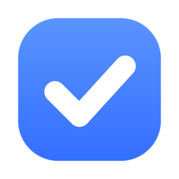
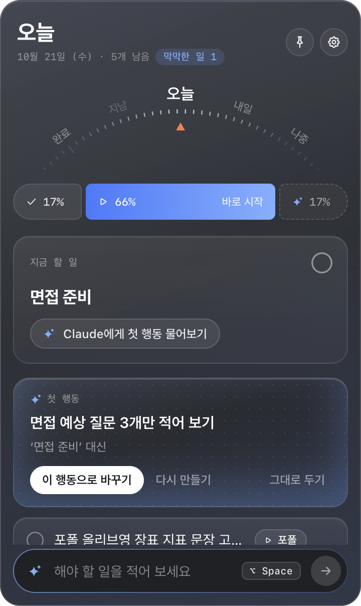
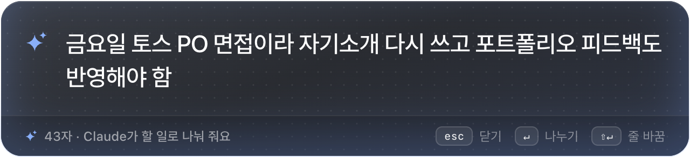
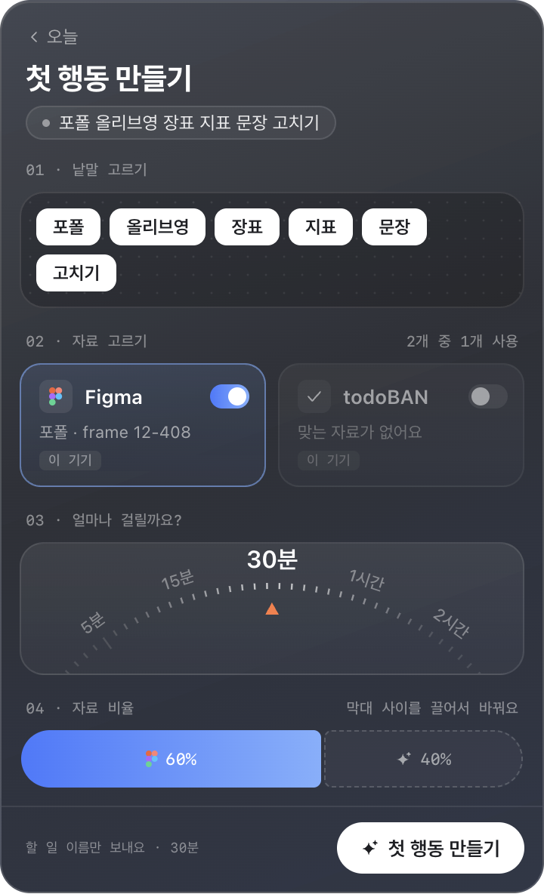

todoBAN떠오른 일을 적으면 바로 시작할 수 있는 작은 행동 하나로 바꿔 줘요. 메뉴바에서 오늘 할 일만 조용히 보여 주는 할 일 앱이에요.

적는 순간부터 실제로 시작하기까지 거리를 줄이는 데만 집중했어요.

어느 앱을 쓰고 있든 단축키 하나로 적어요. 짧으면 바로 오늘 할 일로, 길면 Claude가 할 일 여러 개로 나눠 줘요. ‘금요일까지’, ‘내일’ 같은 날짜 말도 알아들어요.
‘면접 준비’처럼 큰 일은 지금 바로 할 수 있는 작은 행동 하나로 바꿔 줘요. 맨 위 할 일은 묻기 전에 미리 찾아 두어서, 누르자마자 보여요.

Figma 바로가기, 끝낸 할 일, 그리고 연결한 Notion·Linear·Figma를 참고해 내 상황에 맞는 첫 행동을 만들어요. 어떤 자료를 참고했는지도 함께 보여 줘요.
3분이면 돼요.
위에서 받은 파일로 설치해요. 처음 열면 시작하기 화면이 Claude Code를 찾았는지, 로그인했는지 확인해 줘요.
맥은 ⌥ Space, 윈도우는 Alt+Shift+Space. 떠오른 일을 적고 Enter를 누르면 끝이에요.
아직 서명하지 않은 앱이라서 그래요. 한 번만 허용하면 다음부터는 그냥 열려요.
todoBAN은 내 Claude Code를 실행만 해요. 계정 정보는 직접 다루지 않아요.